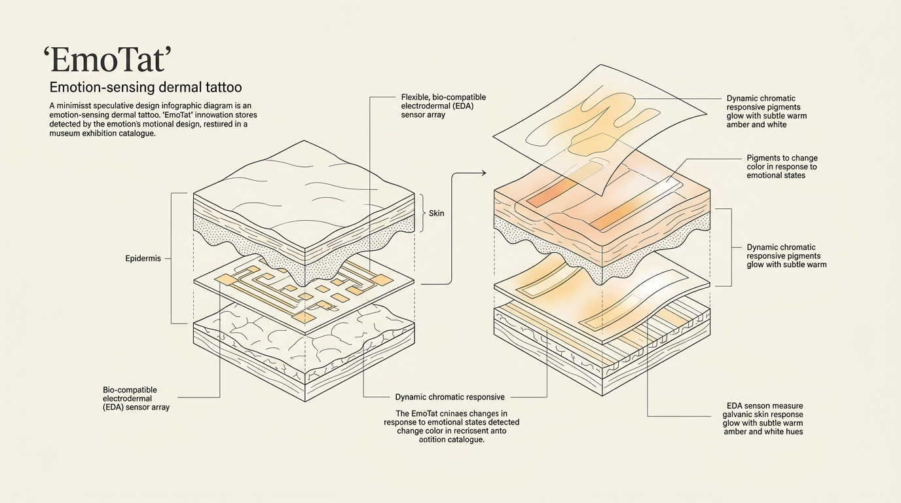
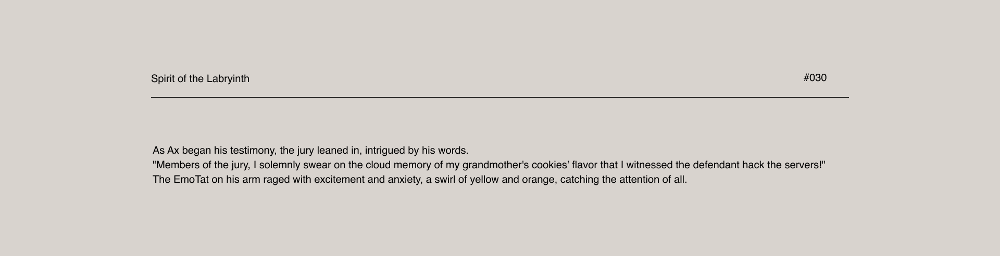
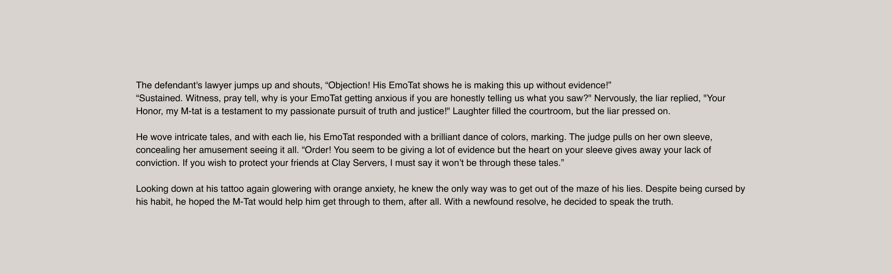
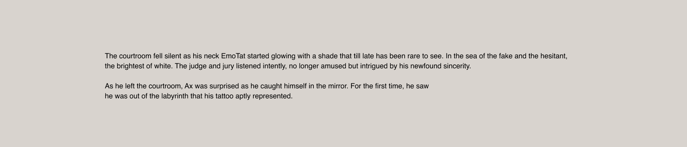
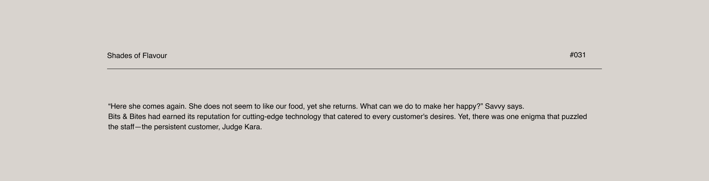
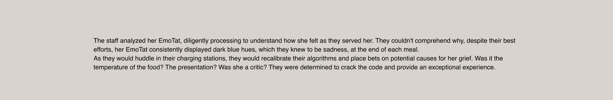
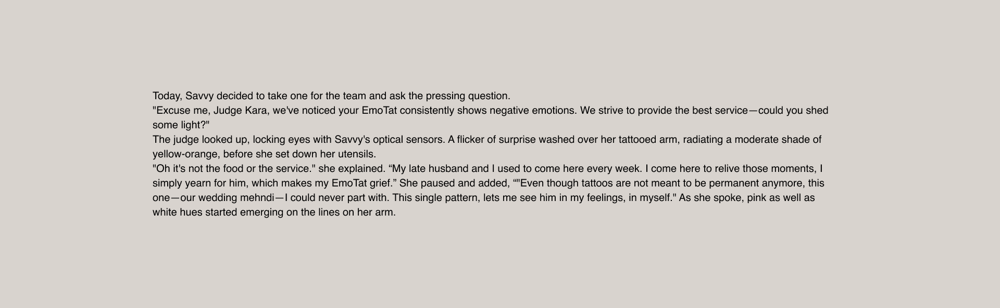

EmoTat
A speculative bio-HCI inquiry exploring emotion-sensing dermal tattoos, physiological biometrics, and the social friction of involuntary emotional transparency.
Dermal Biosensors
Non-invasive Electrodermal Activity (EDA) arrays that detect sympathetic nervous micro-fluctuations in skin conductance.
Responsive Pigments
Living bio-hybrid pigments shifting dynamically across the skin, moving yellow/orange for anxiety, blue for grief, white for truth.
Narrative Scenarios
Two short films examining institutional interrogation chambers and AI-driven hospitality dining.

Living bio-interface: Responsive dermal pigmentation shifting dynamically across the skin in real time.
Dynamic Emotion-Sensing Tattoos
Traditional tattoos are permanent and static: decorative ink frozen in time. EmoTat imagines a radical alternative: what if tattoos were living bio-interfaces that dynamically reflect how we truly feel?
EmoTat is a speculative bio-HCI project exploring smart dermal tattoos. By embedding flexible epidermal biosensors and responsive bio-hybrid pigments directly into the skin, the tattoo continuously monitors autonomic electrodermal activity (galvanic skin conductance). As physiological arousal shifts, the tattoo changes color and form in real time, turning the human body into an involuntary emotional canvas.
Bypassing the Social Mask
In everyday social life, we rely on polite masks: we smile through discomfort, nod through exhaustion, and conceal grief. While facial expressions can be consciously controlled, autonomic sympathetic nervous signals cannot be faked.
By bringing internal biometrics to the surface of the skin, EmoTat strips away this voluntary shield. The project interrogates the social and ethical friction of radical emotional exposure: What happens to trust, privacy, and everyday human relationships when your body broadcasts feelings you cannot hide?
“Emotions are not built in, but they are just built.”
Lisa Feldman Barrett, Theory of Constructed Emotion
Dermal Biosensors & Chromatic Language
EmoTat grounds its speculative interface in emerging laboratory research across epidermal electronics and living biosensors:
- Epidermal Electronics: Ultra-thin, flexible biocompatible circuits adhering to the skin to capture micro-voltage shifts.
- Electrodermal Activity (EDA): Continuous measurement of galvanic skin conductance, detecting autonomic nervous arousal before conscious filters can suppress it.
- Responsive Bio-Hybrid Pigments: Chromatic pigments embedded in the dermal layer that alter hue and luminescence in response to biochemical and electrical stimulation.

Speculative Bio-HCI Architecture: Epidermal layers, flexible biocompatible EDA sensor array, and dynamic chromatic pigment responses.
Chromatic Grammar
- Yellow & Orange Swirl: Sympathetic spike: acute anxiety, cognitive dissonance, or conscious deception.
- Deep Cerulean Blue: Autonomic withdrawal: sustained sorrow, emotional heaviness, and grief.
- Radiant Pure White: Somatic coherence: honest alignment, inner certainty, and unvarnished truth.
- Warm Pink Hues: Parasympathetic safety: affection, empathy, and relational vulnerability.
Societal Friction
- Loss of the Polite Mask: What happens to daily civility when internal feelings cannot be hidden?
- Institutional Surveillance: Employers, insurance underwriters, and courtrooms weaponizing dermal transparency as lie detection.
- Intimacy vs. Exposure: Navigating a world of radical emotional clarity versus inescapable vulnerability.
Spirit of the Labyrinth
This scenario investigates human vulnerability under institutional scrutiny. The protagonist, Ax, takes the oath in a courtroom chamber while attempting to project calm neutrality. But his living tattoo betrays him, swirling with tell-tale yellow and orange hues of acute anxiety. When opposing counsel objects that his skin proves deception, Ax confronts inescapable biological visibility and resolves to speak the unvarnished truth, causing his tattoo to glow radiant white as he steps free of the labyrinth.



Shades of Flavor
This scenario examines how intimate and commercial interactions evolve when emotional expression is quantified by service algorithms. At high-tech restaurant "Bits & Bites", the robotic service staff tries to decode regular patron Judge Kara, whose tattoo persistently radiates dark blue sorrow. While the team huddles in charging bays attempting to recalibrate their hospitality algorithms, Kara reveals her tattoo is her late husband's wedding mehndi: her sorrow is an act of enduring devotion. As she remembers him with affection, warm pink and white hues bloom across her skin.



Process Journey & Worldbuilding
The design trajectory began with foundational literature reviews on the neurobiology of allostasis and affective computing, progressing through narrative worldbuilding, prosthetic prototyping, and speculative scenario production.
Interactive FigJam whiteboard: Explore neurological citations, EDA sensor mapping, costume fabrication, and storyboard iterations.
Key Citations
- Lisa Feldman Barrett (2019): How Emotions Are Made: The Secret Life of the Brain. The Theory of Constructed Emotion and physiological allostasis.
- David Brin (1998): The Transparent Society. Reciprocal transparency, institutional surveillance, and the loss of privacy.
- John A. Rogers, et al. (2011): Epidermal Electronics. Science. Flexible skin-mounted electronic arrays.